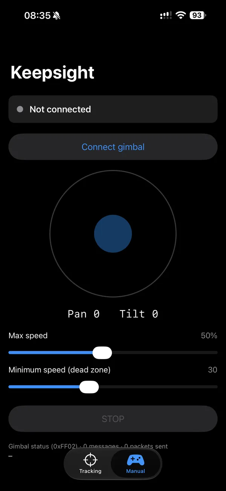

Supported gimbals
Which devices Keepsight controls, how to connect them and move them by hand.
Keepsight controls gimbals and stands through DockKit, Apple’s interface for motorised mounts. This is the recommended way: devices connect by themselves and Apple looks after the connection. In addition, direct Bluetooth control of the FeiyuTech AK4500 is available as a beta.
| Device | Connection |
|---|---|
| Insta360 Flow Pro and Flow 2 Pro | Apple DockKit |
| DJI Osmo Mobile 8 | Apple DockKit |
| Belkin Auto-Tracking Stand Pro | Apple DockKit |
| Other devices with DockKit | Apple DockKit |
| FeiyuTech AK4500 Beta | Bluetooth, directly from Keepsight |
What beta means here: The AK4500 has no official interface for third-party apps. Keepsight talks to it through the maker’s Bluetooth protocol. This works, but it can change with new firmware, and some functions of the gimbal are still missing. In the app this route carries the “BETA” mark.
If a device does not respond as expected, please send a message with the exact model.
Gimbal with Apple DockKit
- Pair the device with your iPhone once. Usually you hold the iPhone against the mount and confirm the request. The manufacturer’s instructions describe the exact steps.
- Mount the iPhone and open Keepsight. The app detects the device by itself and the button at the bottom right shows Track.
- Choose a subject and tap Track.
While Keepsight controls the device, Apple’s own tracking is switched off so the two do not interfere. If you disconnect in the Manual area, the system takes over again.
DockKit requires iOS 17 or later. Keepsight cannot control devices without DockKit, such as older models from the same manufacturers.
FeiyuTech AK4500 Beta
- Switch the gimbal on. Close the Feiyu app, because the gimbal accepts only one connection.
- Tap Connect at the bottom right in Keepsight.
- Allow Bluetooth access the first time.
The AK4500 only reacts above a certain command strength. Keepsight compensates for this with the Minimum speed setting, see the Settings chapter.
Moving by hand

The Manual area at the bottom of the app is for checking the connection.
- Joystick: moves the gimbal left, right, up and down.
- Speed: sets how fast it turns.
- Connect and disconnect, and the current state of the connection.
If the gimbal moves the wrong way here, invert the axis under All settings → Direction.
Without a gimbal
Camera, photos, auto capture, gestures, voice commands and the virtual gimbal also work without a gimbal, handheld or on a tripod.